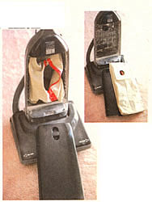
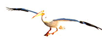

COUNTRY LORE
Raiding your closet to retrofit your vacuum.
Are you tired of paying big dollars for those tiny throw-away paper vacuum cleaner bags, the kind that hold a thimbleful of dust and get harder and harder to find as your vacuum ages? Then why not convert your upright to a lifetime zippered bag? All it takes is about 45 minutes, a plastic Clorox bottle, a leg from an old pair of pants, and a zipper (or short piece of Velcro).
Step one: Carefully cut a clean paper vacuum cleaner bag in half lengthwise (save these pieces). Hold one piece against your mouth and blow into it. The material you use to make your bag should have about the same amount of air resistance. I found the leg from an old pair of khaki pants was perfect material. Using the throwaway bag as a pattern, cut two pieces from the pant leg until they are one inch longer and wider than the original bag (this allows for the seam).
Step two: Carefully remove the heavy cardboard square glued to the bag that you are using as a pattern. From the Clorox bottle, cut a square slightly larger than the piece of cardboard. Trace the square and the hole onto the plastic and cut to the exact dimensions. Be especially careful when cutting out the hole, as this is the part that seals your bag to the vacuum.
Step three: Place the plastic cutout on one half of the pant leg, approximately where its counterpart was on the throwaway bag. Sew firmly to the pant leg, especially around the hole and edges of the plastic. Use a razor blade to slit the material still covering the hole like you'd slice a pie. Do not remove the material in the center, as this will help to keep dust in when you remove the bag to empty it.
Step four: Lay the zipper in the center of the second piece of the pant leg and sew it to the material. Now turn the material over and make an opening for the zipper, being careful to cut no higher or lower than what you want for an opening.
Step five: Lay the two sides together on a table. The plastic hole and zipper should be facing inward (leave zipper partly unzipped). With Velcro it doesn't matter, but facing inward is probably best.
Step six: Sew all around the outside edge at least twice. Lower the zipper and turn the bag right side out. Open the vacuum and gently press the plastic hole over the air intake tube. Replace the vacuum cover and turn the machine on. Put your hand over the end of the wand and feel for the correct amount of suction.
You now have a bag that cost little or nothing, will last longer than your vacuum cleaner, and will help save forests in the process.
-Phillip A. Bellefleur
St. Petersburg, Florida
I hope you find these few tips as helpful as I have:
If you have lost a contact lens, don't fret. Cover the vacuum cleaner nozzle with a discarded nylon panty hose and fasten with a rubber band to pick up your lost lens from the carpet or floor.
If your vase is too deep for your cut flowers, put a small sponge in the bottom. It will fill in the vacant space and hold moisture.
When you knit or crochet, use dark colored needles with light colored yarn and light colored needles with dark yam. It's easier to count stitches and helps avoid eye strain.
Forget to take an article of clothing out of the drier? No problem: toss a wet article or two in with the dry one and run the dryer through a cycle. All articles will come out dry and wrinkle-free.
- Elva M. Pate
Windsor, North Carolina
Parasitic nematodes have cut the population of cuke beetles to a livable level for us. Whether the nematodes attack the adult beetles I don't know, but they will attack the soft-bodied larvae. Nematodes are available from Gardens Alive (812) 537-8650, and probably other places.
- Georgiana Srachta
Homewood, Illinois
The following is one answer to "Trials of Southern Gardening" by Shannon Perna (Dear Mother, September 1998). Shannon, having gardened in Texas, especially east Texas (about 30 miles south of Tyler), I feel your pain. During the drought of '98, with the thermometer near 100°F daily and no rain in sight, even with mulches and watering, the garden was a disaster area. However, in normal years, we have a few ways of fighting back.
Think trap crops! As early in the spring as you can do so, and every few weeks thereafter, plant a row of Russian mammoth sunflowers. Not only are they pretty, but the nectar lovers will thank you. After they have finished blooming and hang their heads down, you will find that they are full of squash bugs, which find them to be the best feast in the garden. Early every morning, take a two- or three-gallon bucket with a couple of inches of soapy water in the bottom, and invite the squash bugs in for a morning dip.
If you are also plagued by flea beetles and striped cucumber beetles, plant a couple of rows of love-lies-bleeding, a grain amaranth, or one of the amaranths used for greens. The beetles will flock to the amaranths, make lacy leaves of them, (which will not even slow down the amaranth), and leave your cucumbers and eggplant alone.
- Jim Richings
Maydelle, Texas
The door molding on my daughter's car suffered from missing pieces and cracked and loose sections. To have a professional replace the molding would have cost us $75 to $100, but I wanted to fix the molding before she left for college. I bought a tube of door molding sealant for $8 at an auto supply store and a roll of garage door bottom seal for $12 at the local hardware store. After removing the damaged door seal, I cut the rubber garage strip in half lengthwise and ran a head of adhesive along the door. I pressed the homemade version onto the door frame and carefully closed the door to ensure a good hand. When it dried, I used a sharp utility knife blade to trim off unwanted pieces. My repair job cost me $20; the money I saved was used towards college expenses for my daughter.
- John McClain
Dillsboro, Indiana
My sister called from Florida and told me of a pelican and herons eating her pond fish, so my suggestion was to use nylon mesh from a fabric store. This is the stuff that was used under petticoats and crinoline in the old days. Now it's often used in Halloween costumes. Nylon mesh has holes in it somewhat like onion bags, but it is finer and comes in a variety of colors that blend in with any scenery, and birds hate it. I use it to cover my tomato vines by tacking it to boards in a tepee shape, or you can easily use twist ties and attach it to a fence and anchor it to the ground with a 1 x 2 board, rocks, or any lightweight, easily moved objects. I have a hundred uses for this material. Here's just a couple more: nylon mesh is perfect for anchoring seedling trees, because it stretches as the tree grows. I also use it to make small bags filled with cedar chips and a couple of moth balls, which I hang in every cupboard in our travel trailer to keep the moths away in the summer and that musty smell away year-round.
I also cover the edges of the eaves on our barn to keep the birds away. This stuff is inexpensive and easy to work with. It's also great for creeping vine plants like morning glory: it easily attaches to your house and is almost invisible when you use the same color as your home's exterior.
- Christine Edwards
Muskegon, Michigan
One million readers need your inspiration! Send your hints and tips to Country Lore, c/o Mother Earth News, P. O. Box 129, Arden, NC 28704 or contact us via our email address at mearthnews@aol.com . Please send along a photo of yourself and your phone number.
|
 |
 |
|